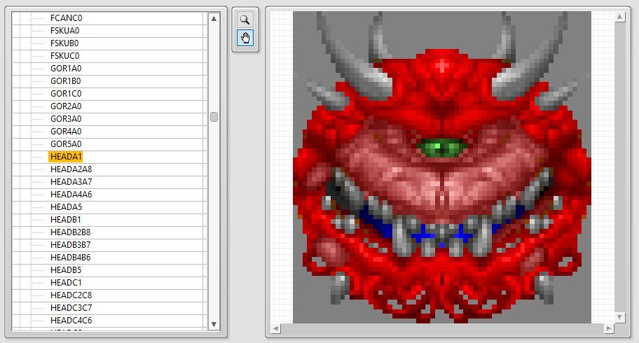
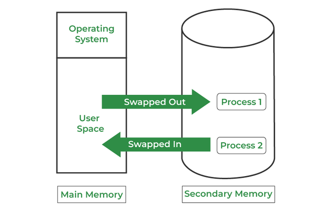
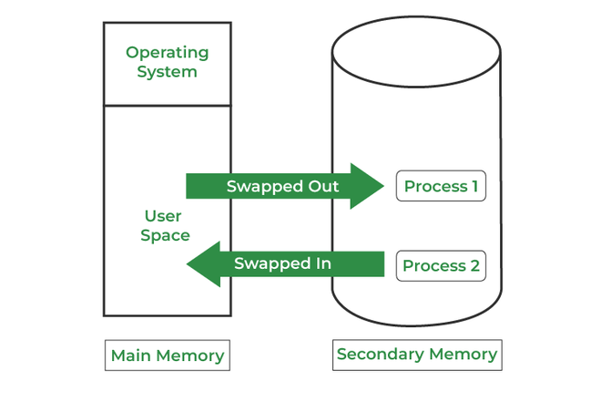
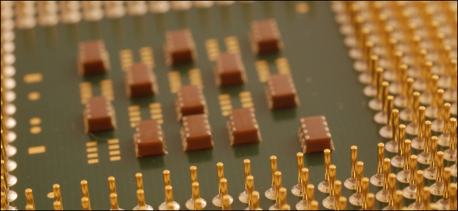
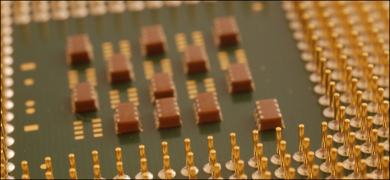

My projects with C++
WAD Filesystem Maker
This C++ project uses the FUSE library in linux, and my own custom library, to treat
DOOM WAD(Wheres All the Data?) files as their own file directories.
This way, you can send a WAD file to anyone, and they can mount it, and perform read,
write, copy, and other file operations on it.

Crime Data Parser
This is a C++ program that parses crime data from los angeles between the years of 2010 to 2017.
Its purpose is to compare the efficiencies of certain algorithms over others.
There are two algorithms that you can use in this program: fibonacci heap and a hash map based on a min-heap
There are two algorithms that you can use in this program: fibonacci heap and a hash map based on a min-heap
Memory Manager
Sometimes, the memory allocator given in standard C and C++ isnt suitable.
In this case, I opted to write my own memory allocation library that works on the best fit and worst fit algorithms. 
In this case, I opted to write my own memory allocation library that works on the best fit and worst fit algorithms. 
Image Processor
I've used photoshop pretty often. Especially the blending techniques present in it.
But how are those techniques actually performed? This program seeks to answer that.
This is a simple image processor that allows you to perform various image manipulation techniques on TGA files such as subtracting, multipling, overlaying, etc.
But how are those techniques actually performed? This program seeks to answer that.
This is a simple image processor that allows you to perform various image manipulation techniques on TGA files such as subtracting, multipling, overlaying, etc.
Linked List
This was my first introduction to data structures, a linked list!
I was tasked with creating a linear data structure using pointers that allows you to store anything you want inside of it. Whether it be integers, pointers, structs, or strings, I found way to implement it. It uses templates, meaning you can store whatever you want inside of it.
Ever since being taught linked lists, ive used it consistently throughout my career.
I was tasked with creating a linear data structure using pointers that allows you to store anything you want inside of it. Whether it be integers, pointers, structs, or strings, I found way to implement it. It uses templates, meaning you can store whatever you want inside of it.
Ever since being taught linked lists, ive used it consistently throughout my career.
Cache Simulator
I was assigned to research and determine the efficiency
of various types of cache implementations.
To do this, I wrote a cache simulator in C++. It simulates fully associative, set associative, and direct mapped cache.
In addition, I compiled all my results in a paper in the repository. Give it a read! 
To do this, I wrote a cache simulator in C++. It simulates fully associative, set associative, and direct mapped cache.
In addition, I compiled all my results in a paper in the repository. Give it a read! 